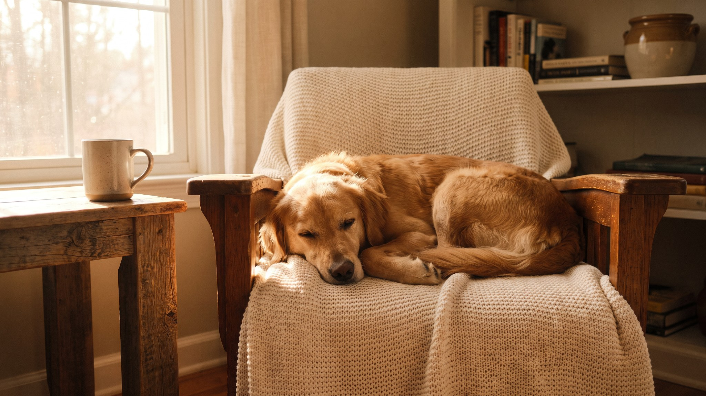

Мягкий налёт на зубах собаки твердеет за 3–5 дней и превращается в зубной камень, который щёткой уже не взять. Следом появляется запах из пасти, а потом воспаление дёсен. Чистка зубов дома не заменяет ветеринара, зато откладывает профессиональную чистку под наркозом на годы. Эту инструкцию можно применить уже сегодня вечером.
🐾 Заведите дневник ухода за собакой
Вес, шерсть, обработки, прививки — всё в одном месте. А если что-то смущает, AI-ветеринар ответит круглосуточно и бесплатно.
Завести дневник → Завести в MAX →
У вас iPhone? AnimaLife есть в App Store
После еды на зубах оседает налёт. Через 3–5 дней без чистки он твердеет в зубной камень, убрать который дома уже нельзя: нужна ультразвуковая чистка у ветеринара под анестезией. Зубной камень вызывает воспаление дёсен, расшатывает зубы и создаёт очаг инфекции.
Регулярная чистка не даёт налёту затвердеть. Это профилактика, а не лечение. Если камень уже есть, сначала нужна чистка у ветеринара, потом дома поддерживать результат.
Если сразу сунуть щётку в пасть, собака будет убегать от одного её вида. Лучше растянуть приучение на 7–10 дней.
После каждого сеанса хвалите и давайте лакомство. Собака должна связывать чистку с приятным, а не с борьбой.
Человеческую зубную пасту использовать нельзя: фтор и ксилит токсичны для собак. Нужна специальная зубная паста для собак, обычно со вкусом мяса или птицы. Есть три варианта инструмента:
Идеальная частота чистки: каждый день. Достаточный минимум: 2–3 раза в неделю. Реже смысл теряется, налёт успевает затвердеть.
Весь процесс занимает 1–3 минуты. Регулярность важнее тщательности одного сеанса.
Через 2–3 недели регулярной чистки вы увидите разницу:
Дополнительно помогают, но не заменяют щётку: жевательные лакомства с пометкой «для здоровья зубов» (одобренные ветеринаром), резиновые игрушки для жевания, специальные корма с механическим эффектом очистки. Это поддержка, а не альтернатива.
Чистка зубов дома не решает всё. Есть признаки, при которых нужна очная консультация:
Раз в год осмотр зубов у ветеринара стоит проходить в любом случае: врач увидит то, куда щётка не добирается.
Материал носит информационный характер и не заменяет очную консультацию ветеринара.
🐾 Чтобы уход не держать в голове
AnimaLife напомнит, когда стричь когти, вычёсывать, купать и обрабатывать от паразитов, и заведёт дневник по вашему питомцу. Бесплатно.
Настроить напоминания → Настроить в MAX →
У вас iPhone? AnimaLife есть в App Store
🐾 Понравился разбор?
Подпишитесь на канал — каждый день разбираем по одному тревожному симптому у кошек и собак: что в пределах нормы, а когда пора к врачу. Подпишитесь, чтобы не пропустить разбор, который может спасти здоровье вашего питомца.